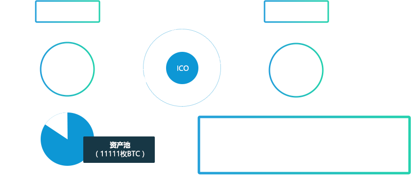

资产链社区，是由国内外区块链爱好者联合发起的资产数字化社区，是资产数字化平台和工具。用以实现全球资产的数字化流通，伴随项目的深入推进，这一理念的可行性得到全面认证，现将面向国内外平台展开ACC首期众筹。
一、ACC首期ICO众筹规则
- 众筹方式：支持BTC、ETH
- ICO起止时间：2017年5月9号-6月6号，持续28天。
- 众筹规则：本次ICO众筹数量为1亿枚ACC，1000枚起投（声明：众筹低于1000枚视为无效，所投BTC/ETH将不予退回）。
- 众筹资金分配规则：
本次ICO共众筹11111枚BTC，所得数字资产，将通过链层智能合约，其中20%数字资产为做功奖励，80%为进入资产池锁定。此次ICO，将形成去中心化动态管理组织DAO并管理众筹资金。众筹资金由DAO全体爵共同维护，任何资金的移动都必须通过51%以上的爵审核。随着资产链的增值，ACC的价值将随之攀升。
- 众筹政策：
- ICO众筹政策分为四档，每一周的众筹数额都会不同。具体如下（所有时间均为北京时间）。
| EarlyBird | 第一周 | 第二周 | 第三周 | 第四周 | |
|---|---|---|---|---|---|
| 北京时间 | 5.9 18点-5.10 18点 | 5.10 18点-5.16 18点 | 5.16 18点-5.23 18点 | 5.23 18点-5.30 18点 | 5.30 18点-6.6 18点 |
| 1BTC | 11000ACC | 9000ACC | 8500ACC | 8000ACC | 7500ACC |
| 1ETH | 650ACC | 550ACC | 500ACC | 450ACC | 400ACC |
- 资金分配示意图： 
- 众筹平台与渠道：
- 国际众筹平台：
-
序号 平台 众筹数量（BTC） 备注 1 ICO COUNTDOWN 600枚 2 coinschedule 600枚 - ACC网众筹：
-
序号 平台 众筹数量（BTC） 备注 1 www.acchain.org 3000枚 - 渠道众筹：
-
序号 渠道 众筹数量（BTC） 备注 1 美国节点 2000枚 2 英国节点 2000枚 3 柬埔寨节点 2911枚
二、项目介绍
- 资产链（ACChain）构建了一个完全去中心化的资产数字化平台，是全球资产代币的汇聚社区。通过复制资产链总账，完成资产数字化，生成以ACC（Asset Collection Coin）为本币进行资产互换标的的代币。
- 资产链（ACChain）是一套精密、完整并具备自我完善能力的本位制分布式总账。各分布式节点通过做功（复制ACC总账）生成新区块，形成资产链。ACC是资产链（ACChain）上的资产数字化总账代币，是数字资产互换本币，代币通过本币实现互换流通。
- 资产链作为资产数字化工具，应用于全球。资产链社区发起针对链层数字货币的全球ICO，构建资产数字化全球超级节点，这将是全球首批超级节点形成的过程，也是全球主流链层数字货币与资产本币（Asset standard token）ACC的交互过程，他们将共同组成数字资产互换标的——数字货币SDR。同时，各区域建立国际节点，以节点总账代币的形式在本区域流通，至此，数字货币SDR将与国际节点总账代币共同成为国际交易所主要交易币种。在这个生态体系中，各节点代币将通过与节点总账代币互换实现流通，各节点总账代币与ACC互换实现流通。率先分割并享有国际超级节点的人会获得市场资源的先发之力。
三、国际节点代币发售计划
| 序号 | 代币项目 | 项目类型 | 尽职调查 | 公示期 | 国际节点 |
|---|---|---|---|---|---|
| 1 | RET-SCHSR | 商品类（房产） | 4.4-4.28 | 5.9-5.15 | US |
| 2 | ST—SCLMaldives | 权益类 | 5月 | 待定 | US(Maldives) |
| 3 | TLT-SCLMaldives | 商品类（旅游） | 5月 | 待定 | US(Maldives) |
| 4 | ST-HGF | 权益类 | 6月 | 待定 | US |
| 5 | TLT-HGF | 应用类（旅游） | 6月 | 待定 | US |
| 6 | ST-MBV | 权益类 | 7月 | 待定 | Belize |
| 7 | TLT-MBV | 应用类（旅游） | 7月 | 待定 | Belize |
| 8 | XB | 商品类 | 6月末 | 待定 | UK |
| 9 | KB | 商品类 | 5月末 | 待定 | Cambodia（柬埔寨） |
| 10 | 茅台基酒 | 商品类 | 5月末 | 待定 | CN |
| 11 | 洪湖龙虾 | 商品类 | 6月初 | 待定 | CN |
| 12 | 全球候鸟酒店 | 商品类 | 6月初 | 待定 | CN |
| 13 | 五常大米 | 商品类 | 6月中旬 | 待定 | CN |
五、技术特点
- 1、分布式总账科目
- 分布式总账技术确立资本链总账规则；资产与代码锚定的核心算法；交易规则；共识机制；私钥与地址；账户安全技术。
- 2、做功-激励精准回报机制
- 按照不同做工方式-产生区块、资产发行、社区投票的特点编制对应奖励算法。
- 3、加密PBFT算法
- PBFT算法针对委托人权利滥用的问题提供完善解决方案，使得委托人的记账能力更为可控。
- 4、用于DAPP、代币的侧链技术
- 资产链系统提供了一个命令行工具，其开源特点支持侧链自主开发；每一个dapp对应一个侧链，侧链的核心逻辑使用nodejs开发，界面部分可以使用任意前端技术。
- 5、高速交易技术
- 资产链内建了一个交易抽象层，交易之间的区别主要是交易类型和asset，扩展部分会根据类型的不同分别存在不同的asset表中。
- 6、多元生态接口
- 技术成为生态建立最可靠的保障，生态倒逼技术不断革新，呈现正向良性互动。
六、团队介绍
-

- 万佳
- 贵阳区块链金融有限公司CEO
- ACChain创始人
-

- 单青峰
- 分布式系统工程师
- 阿希链创始人
-

- 于浩天
- 人工智能专家
- 领导了国家超级计算机天河二号在生命科学领域
- 的人工智能应用，如今这一国内顶尖的
- 人工智能团队正式助力ACChain体系。
-

- 张盛
- 高性能计算学博士
-

- Ben Gibbons
- Collins Barrow合伙人
-

- Joe F. Attrux
- CPA, CA (Ontario)
- CPA (Hong Kong)国际注册会计师
-

- 赵景柱
- 国际软件架构师协会（IASA）
-

- 朴成俊
- 区块链信息保护研究会 会长
七、公开社区
微信公众平台
-

- QQ群：583857260 (群名称：ACChain.org )
- twitter：https://twitter.com/ACCHAIN_
- facebook：https://www.facebook.com/acchain.acchain.5